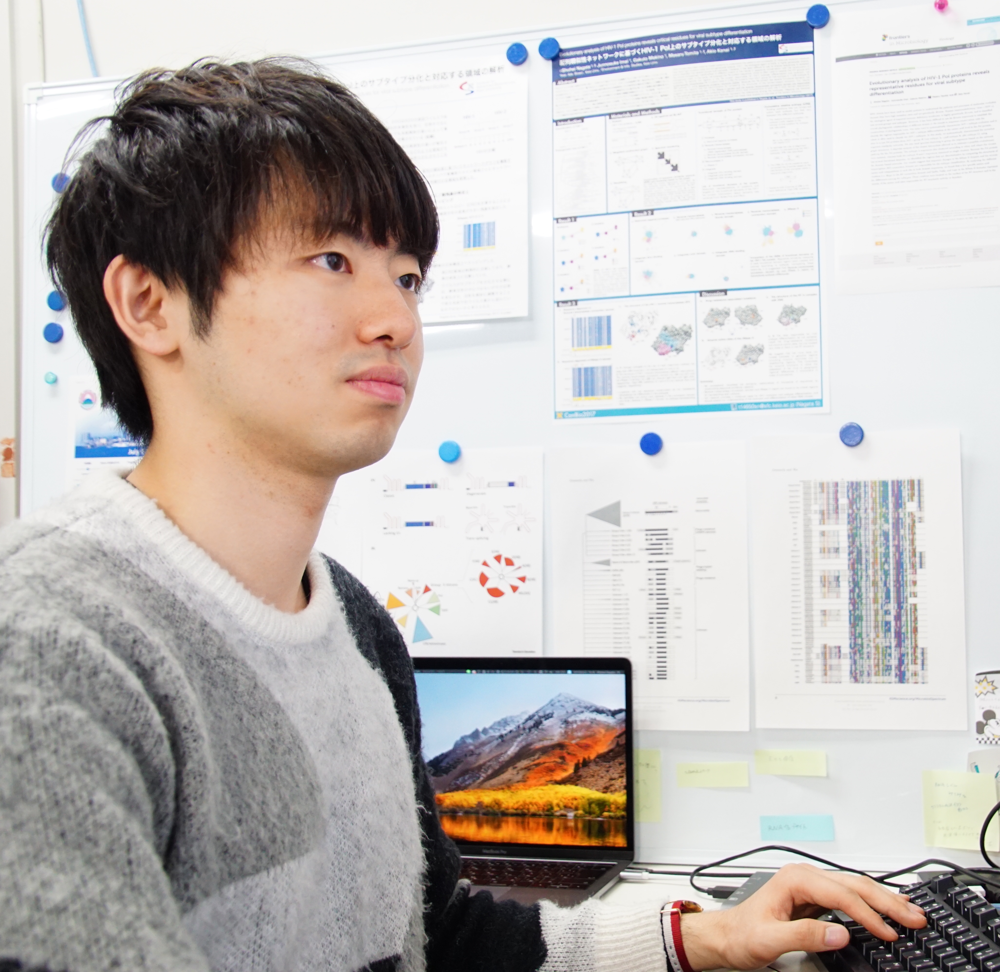

<!DOCTYPE html>
<html lang="ja">
  <head>
    <meta charset="utf-8">
    <!-- meta-->
    <title>永田 祥平 | 全脳アーキテクチャ若手の会</title>
    <meta name="description" content="全脳アーキテクチャ若手の会は、脳や人工知能、そしてそれらが与える影響について興味がある、すべての方のためのコミュニティです。">
    <link rel="shortcut icon" href="/favicon.ico" type="image/vnd.microsoft.icon">
    <link rel="icon" href="/favicon.ico" type="image/vnd.microsoft.icon">
    <meta http-equiv="X-UA-Compatible" content="IE=Edge">
    <!-- smartphone meta-->
    <meta name="viewport" content="width=device-width, initial-scale=1.0, maximum-scale=1.0, user-scalable=0, shrink-to-fit=no">
    <!-- ogp-->
    <meta property="fb:app_id" content="114814789107922">
    <meta property="og:url" content="https://wbawakate.jp/member/nagata-shohei/">
    <meta property="og:image" content="https://wbawakate.jp/img/member/nagata-shohei.jpg">
    <meta property="og:type" content="website">
    <meta property="og:title" content="永田 祥平 | 全脳アーキテクチャ若手の会">
    <meta property="og:site_name" content="全脳アーキテクチャ若手の会">
    <meta property="og:description" content="全脳アーキテクチャ若手の会は、脳や人工知能、そしてそれらが与える影響について興味がある、すべての方のためのコミュニティです。">
    <meta property="og:locale" content="ja_JP">
    <!-- twitter card-->
    <meta property="twitter:card" content="summary_large_image">
    <meta property="twitter:title" content="永田 祥平 | 全脳アーキテクチャ若手の会">
    <meta property="twitter:description" content="全脳アーキテクチャ若手の会は、脳や人工知能、そしてそれらが与える影響について興味がある、すべての方のためのコミュニティです。">
    <meta property="twitter:image" content="https://wbawakate.jp/img/member/nagata-shohei.jpg">
    <!-- canonical url-->
    <link rel="canonical" href="https://wbawakate.jp/member/nagata-shohei/">
    <script src="../../js/ua-switch.js"></script>
    <!-- stylesheet-->
    <link rel="stylesheet" href="//fonts.googleapis.com/css?family=Karla:400,700,400italic,700italic" type="text/css" media="all">
    <link rel="stylesheet" href="//fonts.googleapis.com/css?family=Montserrat%3Aregular%2C700&amp;#038;ver=4.7.5" type="text/css" media="all">
    <link rel="stylesheet" href="../../css/style.css">
  </head>
  <body data-page-id="member-detail">
<div id="fb-root"></div>
<script>(function(d, s, id) {
  var js, fjs = d.getElementsByTagName(s)[0];
  if (d.getElementById(id)) return;
  js = d.createElement(s); js.id = id;
  js.src = "//connect.facebook.net/ja_JP/sdk.js#xfbml=1&version=v2.7&appId=114814789107922";
  fjs.parentNode.insertBefore(js, fjs);
}(document, 'script', 'facebook-jssdk'));</script>

    <div class="wrapper">
      <div class="content">
        <div class="front-block">
          <div class="wba-breadcrumb-list hover-effect">
            <ul class="list">
              <li class="item"><a href="../../">Home</a></li>
              <li class="item"><a href="../../member/">Members</a></li>
              <li class="item"><a>永田 祥平</a></li>
            </ul>
          </div>
        </div>
        <main class="main">
          <div class="front-block">
            <div class="image"></div>
            <div class="profile hover-effect">
              <h1 class="name">永田 祥平
              </h1>
              <div class="sub-name">Nagata Shohei
              </div>
              <div class="body"><h2 id="-">メッセージ</h2>
<p>主に生命情報科学 (Bioinformatics)を中心に学んでいます。新しいことに日々触れていきたいです。気軽に連絡よろしくお願いします！</p>
<h2 id="-">略歴</h2>
<ul>
<li>2014年3月 国際基督教大学高等学校 卒業</li>
<li>2014年4月 慶應義塾大学 環境情報学部 入学</li>
<li>2018年3月 慶應義塾大学 環境情報学部 卒業</li>
<li>2018年4月 慶應義塾大学大学院 政策・メディア研究科 入学<br>現在，同大学院在籍中 (冨田勝研究室，金井昭夫研究室)，<a href="iab.keio.ac.jp/jp/">同大先端生命科学研究所</a>所属</li>
</ul>
<h2 id="-">インターン等</h2>
<ul>
<li>ヤフー株式会社 (サイエンティスト職)</li>
<li>ライフサイエンス統合データベースセンター</li>
</ul>
<h2 id="-">研究業績</h2>
<h3 id="-">国際論文</h3>
<ol>
<li>Shohei Nagata, Junnosuke Imai, Gakuto Makino, Masaru Tomita, Akio Kanai (2017). Evolutionary analysis of HIV-1 Pol proteins reveals representative residues for viral subtype differentiation. Frontiers in Microbiology. 8, 2151. (<a href="https://www.frontiersin.org/articles/10.3389/fmicb.2017.02151/full">link</a>)  </li>
</ol>
<p>[Ebook] <a href="https://www.frontiersin.org/research-topics/5459/genome-invading-rna-networks">Genome Invading RNA Networks</a>, Frontiers Media</p>
<h3 id="-">国際学会</h3>
<ol>
<li>Shohei Nagata, Junnosuke Imai, Gakuto Makino, Masaru Tomita, Akio Kanai (2016). Both RNase H domain and reverse transcriptase connection domain on HIV-1 pol protein are important for virus subtype differentiation. The 2016 joint annual meeting of the RNA Society and the RNA Society of Japan, Kyoto.</li>
<li>Motofumi Saito, Shohei Nagata, Masaru Tomita, Haruo Suzuki, Akio Kanai (2017). Large-scale molecular evolutionary analysis of Clp1 protein involved in tRNA precursor splicing. The 22nd Annual Meeting of the RNA Society, Prague.</li>
<li>Shohei Nagata, Junnosuke Imai, Gakuto Makino, Masaru Tomita, Akio Kanai (2017). Evolutionary analysis of HIV­-1 pol proteins reveals critical residues for virus subtype differentiation. The 22nd Annual Meeting of the RNA Society, Prague.</li>
<li>Shohei Nagata, Masaru Tomita, Akio Kanai (2018). Systematic characterization of reverse transcriptases-related proteins and their diversities in prokaryotes. The 23rd Annual Meeting of the RNA Society, California.</li>
<li>Motofumi Saito, Asako Sato, Shohei Nagata, Masaru Tomita, Satoshi Tamaki, Haruo Suzuki, Akio Kanai (2018). Large-scale phylogenetic analysis and diversity of Clp1 polynucleotide kinase family protein. The 23rd Annual Meeting of the RNA Society, California.</li>
<li>Masahiro Miura, Shohei Nagata, Satoshi Tamaki, Masaru Tomita, Akio Kanai (2018). Comprehensive sequence analysis of group II introns and their evolution in bacteria. The 23rd Annual Meeting of the RNA Society, California.</li>
<li>Shohei Nagata, Masaru Tomita, Akio Kanai (2018). Domain-based evolutionary analysis of HIV-1 Pol proteins using sequence similarity networks. 50th Anniversary of the Neutral Theory of Molecular Evolution (SMBE2018), Yokohama.</li>
</ol>
<h3 id="-">国内学会</h3>
<ol>
<li>永田祥平，今井淳之介，牧野岳都，冨田勝，金井昭夫 (2015)．HIV-1 pol領域における配列類似性ネットワーク構築と段階的クラスタリングによる配列保存性解析．第38回日本分子生物学会年会・第88回日本生化学会大会 合同大会，神戸．</li>
<li>梁田麻佳，永田祥平，冨田勝，佐藤裕徳，金井昭夫 (2016)．SIVおよびHIVにおけるアンチセンスタンパク質の進化解析．第39回日本分子生物学会年会，横浜．</li>
<li>永田祥平，今井淳之介，牧野岳都，冨田勝，金井昭夫 (2016)．HIV-1 pol領域のRNase Hおよび逆転写酵素連結ドメイン上のアミノ酸変化はウイルスのサブタイプ分化とよく呼応する．第39回日本分子生物学会年会，横浜．</li>
<li>永田祥平，今井淳之介，牧野岳都，冨田勝，金井昭夫 (2017)．配列類似性ネットワークに基づくHIV-1 Pol上のサブタイプ分化と対応する領域の解析．第1回慶應ライフサイエンスシンポジウム，日吉．</li>
<li>三浦昌浩，永田祥平，玉木聡志，冨田勝，金井昭夫 (2017)．バクテリアにおけるグループⅡイントロンの大規模進化解析．第1回慶應ライフサイエンスシンポジウム，日吉．</li>
<li>齋藤元文，永田祥平，冨田勝，玉木聡志，鈴木治夫，金井昭夫 (2017)．Pre-tRNAスプライシングに関わるClp1タンパク質の大規模分子進化解析．第1回慶應ライフサイエンスシンポジウム，日吉．</li>
<li>永田祥平，今井淳之介，牧野岳都，冨田勝，金井昭夫 (2017)．配列類似性ネットワークに基づくHIV-1 Pol上のサブタイプ分化と対応する領域の解析．生命情報科学若手の会 第9回研究会，蒲郡．(ポスター発表及びライトニングトーク)</li>
<li>永田祥平，今井淳之介，牧野岳都，冨田勝，金井昭夫 (2017)．配配列類似性ネットワークに基づくHIV-1 pol上のサブタイプ分化と対応する領域の解析．2017年度生命科学系学会合同年次大会 (第40回日本分子生物学会年会)，神戸．</li>
<li>梁田麻佳，永田祥平，冨田勝，佐藤裕徳，金井昭夫 (2017)．配列類似性ネットワークを通じたHIV-1におけるアンチセンスタンパク質遺伝子の進化解析．2017年度生命科学系学会合同年次大会 (第40回日本分子生物学会年会)，神戸．</li>
<li>齋藤元文，永田祥平，冨田勝，玉木聡志，鈴木治夫，金井昭夫 (2017)．tRNA前駆体スプライシングに関わるClp1タンパク質の大規模分子進化解析．2017年度生命科学系学会合同年次大会 (第40回日本分子生物学会年会)，神戸．</li>
<li>三浦昌浩，永田祥平，玉木聡志，冨田勝，鈴木治夫，金井昭夫 (2017)．バクテリアの有するグループⅡイントロンの網羅的比較および進化解析．2017年度生命科学系学会合同年次大会 (第40回日本分子生物学会年会)，神戸．</li>
<li>永田祥平，冨田勝，金井昭夫 (2018)．原核生物における逆転写酵素の多様性及び分子進化解析．第2回慶應ライフサイエンスシンポジウム，日吉．</li>
<li>齋藤元文，佐藤朝子，永田祥平，玉木聡志，冨田勝，鈴木治夫，金井昭夫 (2018)．RNAキナーゼClp1の大規模分子進化解析から予測された新規バクテリアClp1の機能検証．第2回慶應ライフサイエンスシンポジウム，日吉．</li>
<li>西潟茜子，永田祥平，冨田勝，金井昭夫 (2018)．C 型肝炎ウイルス由来非構造タンパク質NS5Aの分子進化とインターフェロン感受性領域の特定に向けて．第2回慶應ライフサイエンスシンポジウム，日吉．</li>
<li>永田祥平，冨田勝，金井昭夫 (2018)．Evolutionary analysis of reverse transcriptases-related proteins and their diversities in prokaryotes．第7回生命医薬情報学連合大会 (IIBMP2018)，鶴岡．</li>
<li>齋藤元文，佐藤朝子，永田祥平，冨田勝，玉木聡志，鈴木治夫，金井昭夫 (2018)．Large-scale phylogenetic analysis of polynucleotide kinase Clp1 and characterization of a novel bacterial Clp1．第7回生命医薬情報学連合大会 (IIBMP2018)，鶴岡．</li>
<li>三浦昌浩，永田祥平，玉木聡志，冨田勝，金井昭夫 (2018)．バクテリアの有するグループⅡイントロンの大規模系統解析．第7回生命医薬情報学連合大会 (IIBMP2018)，鶴岡．</li>
<li>齋藤元文，佐藤朝子，永田祥平，冨田勝，玉木聡志，鈴木治夫，金井昭夫 (2018)．Biochemical characterization of a novel and thermostable polynucleotide kinase Clp1 in the bacteria Thermus scotoductus．高度好熱菌Thermus thermophilus発見50周年記念研究会，伊豆．</li>
<li>三浦昌浩，永田祥平，玉木聡志，冨田勝，金井昭夫 (2017)．原核生物の有するグループⅡイントロンの網羅的同定および医療応用への可能性．第26回山形分子生物学セミナー，山形．*口頭発表</li>
<li>永田祥平，冨田勝，金井昭夫 (2018)．ウイルスと原核生物における逆転写酵素の大規模進化解析．第41回日本分子生物学会年会，横浜．</li>
<li>Shohei Nagata, Masaru Tomita, Akio Kanai (2018). Evolutionary analysis of reverse transcriptases in viruses and prokaryotes. The 41st Annual Meeting of the Molecular Biology Society of Japan, Yokohama. *Oral presentation</li>
<li>齋藤元文，佐藤朝子，永田祥平，冨田勝，玉木聡志，鈴木治夫，金井昭夫 (2018)．好熱性バクテリアThermus scotoductus由来新規ポリヌクレオチドカイネースClp1の生化学的な特徴解析．第41回日本分子生物学会年会，横浜．</li>
<li>三浦昌浩，永田祥平，玉木聡志，冨田勝，金井昭夫 (2018)．原核生物の有するグループⅡイントロンの網羅的同定および系統解析．第41回日本分子生物学会年会，横浜．</li>
<li>西潟茜子，永田祥平，冨田勝，金井昭夫 (2018)．C 型肝炎ウイルス由来非構造タンパク質NS5Aの分子進化とインターフェロン感受性．第41回日本分子生物学会年会，横浜．</li>
<li>高橋佑歌，永田祥平，三浦昌浩，冨田勝，金井昭夫 (2018)．バクテリアにおけるtRNA 遺伝子クラスターの進化解析．第41回日本分子生物学会年会，横浜．</li>
</ol>
<h2 id="-">表彰・受賞</h2>
<ul>
<li>2014年 アート＆テクノロジー東北2014 奨励賞</li>
<li>2014年 先端生命科学研究会 2014年度春学期 奨励賞</li>
<li>2016年 先端生命科学研究会 2016年度秋学期 優秀賞</li>
<li>2018年 SFC STUDENT AWARD 2017  </li>
</ul>
<h2 id="-">リンク</h2>
<p><a href="https://www.wantedly.com/users/3431643">Wantedly</a><br><a href="https://www.linkedin.com/in/shohei-nagata/">LinkedIn</a></p>

              </div>
              <div class="sns-list no-hover-effect">
                <div class="sns-item facebook"><a class="elm-a" href="https://www.facebook.com/shohei.nagata" target="_blank"><i class="fa fa-facebook"></i></a></div>
              </div>
            </div>
          </div>
        </main>
      </div>
      <div class="wba-global-nav"><a href="../../">
          <div class="logo"></div></a>
        <div class="bg"></div>
        <div class="block-menu">
          <nav>
            <ul class="menu-list hover-effect">
              <li class="menu-item"><a class="elm-a" href="../../">Home</a></li>
              <li class="menu-item"><a class="elm-a" href="../../about/">About</a></li>
              <li class="menu-item"><a class="elm-a" href="../../member/">Members</a></li>
              <li class="menu-item"><a class="elm-a" href="../../event/">Events</a></li>
              <li class="menu-item"><a class="elm-a" href="../../sponsor/">Sponsors</a></li>
              <li class="menu-item"><a class="elm-a" href="../../contact/">Contact</a></li>
              <li class="menu-item"><a class="elm-a" href="../../sitemap/">Sitemap</a></li>
            </ul>
          </nav>
          <ul class="share-list">
            <li class="share-item" data-sns="facebook">
              <div class="fb-like" data-layout="button_count" data-action="like" data-size="small" data-show-faces="false" data-share="true"></div>
            </li>
            <li class="share-item" data-sns="twitter"><a class="twitter-share-button" href="https://twitter.com/share" data-hashtags="wbawakate">Tweet</a>
              <script>!function(d,s,id){var js,fjs=d.getElementsByTagName(s)[0],p=/^http:/.test(d.location)?'http':'https';if(!d.getElementById(id)){js=d.createElement(s);js.id=id;js.src=p+'://platform.twitter.com/widgets.js';fjs.parentNode.insertBefore(js,fjs);}}(document, 'script', 'twitter-wjs');</script>
            </li>
          </ul>
        </div>
        <div class="btn-menu"><span class="ham"></span></div>
      </div>
      <div class="global-footer">
        <footer>
          <ul class="sns-list">
            <li class="sns-item"><a class="elm-a facebook" href="https://www.facebook.com/groups/713921892010595/" target="_blank"><i class="fa fa-facebook"></i></a></li>
          </ul>
          <ul class="share-list">
            <li class="share-item" data-sns="facebook">
              <div class="fb-like" data-layout="button_count" data-action="like" data-size="small" data-show-faces="false" data-share="true"></div>
            </li>
            <li class="share-item" data-sns="twitter"><a class="twitter-share-button" href="https://twitter.com/share" data-hashtags="wbawakate">Tweet</a>
              <script>!function(d,s,id){var js,fjs=d.getElementsByTagName(s)[0],p=/^http:/.test(d.location)?'http':'https';if(!d.getElementById(id)){js=d.createElement(s);js.id=id;js.src=p+'://platform.twitter.com/widgets.js';fjs.parentNode.insertBefore(js,fjs);}}(document, 'script', 'twitter-wjs');</script>
            </li>
          </ul>
          <div class="copyright">
            <p>&copy; Copyright 2024. WBA Future Leaders All Rights Reserved
            </p>
          </div>
        </footer>
      </div>
    </div>
    <!-- javascript-->
    <script src="../../js/lib/jquery.min.js"></script>
    <script src="../../js/lib/lodash.min.js"></script>
    <script src="https://use.fontawesome.com/106967cd3d.js"></script>
    <script src="../../js/script.js"></script>
<script>
  (function(i,s,o,g,r,a,m){i['GoogleAnalyticsObject']=r;i[r]=i[r]||function(){
  (i[r].q=i[r].q||[]).push(arguments)},i[r].l=1*new Date();a=s.createElement(o),
  m=s.getElementsByTagName(o)[0];a.async=1;a.src=g;m.parentNode.insertBefore(a,m)
  })(window,document,'script','https://www.google-analytics.com/analytics.js','ga');

  ga('create', 'UA-68678459-1', 'auto');
  ga('send', 'pageview');

</script>
  </body>
</html>